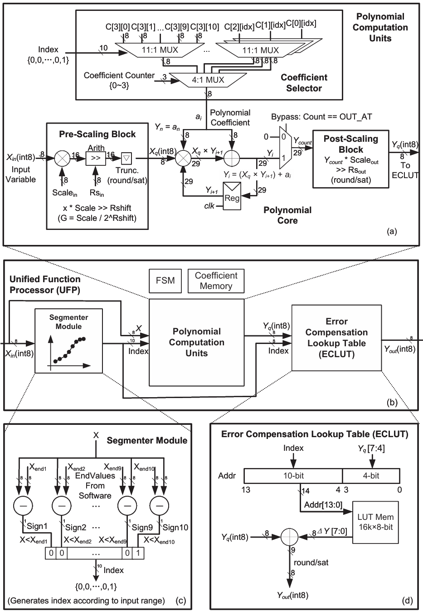
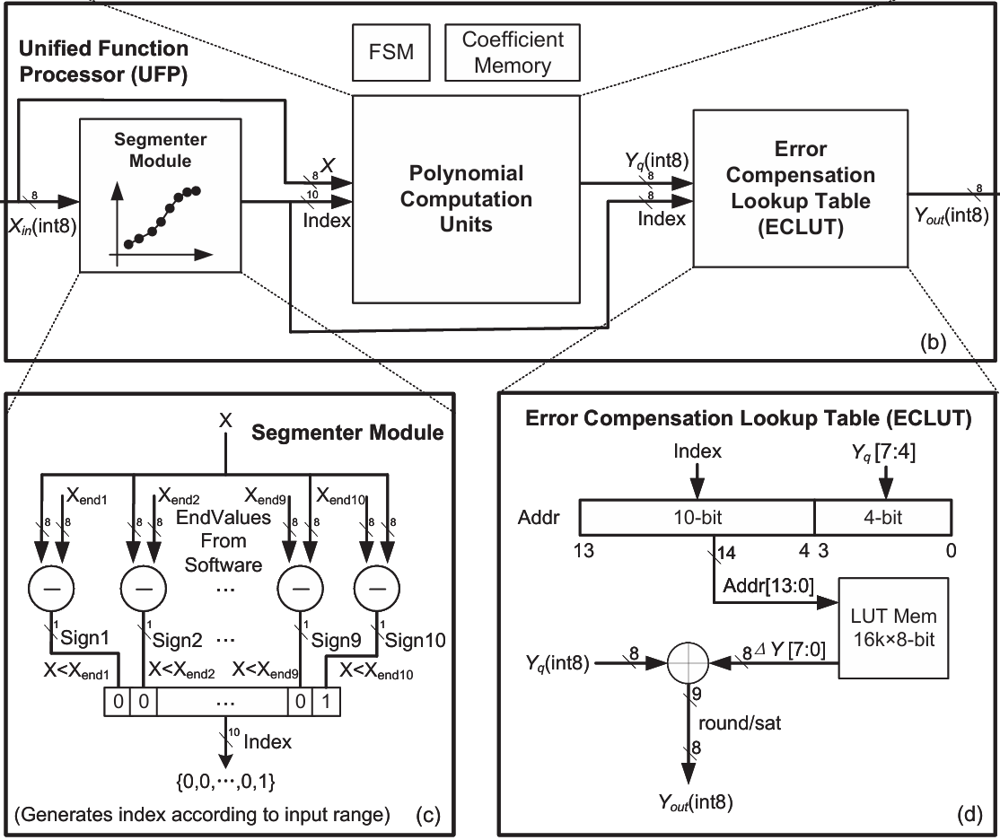
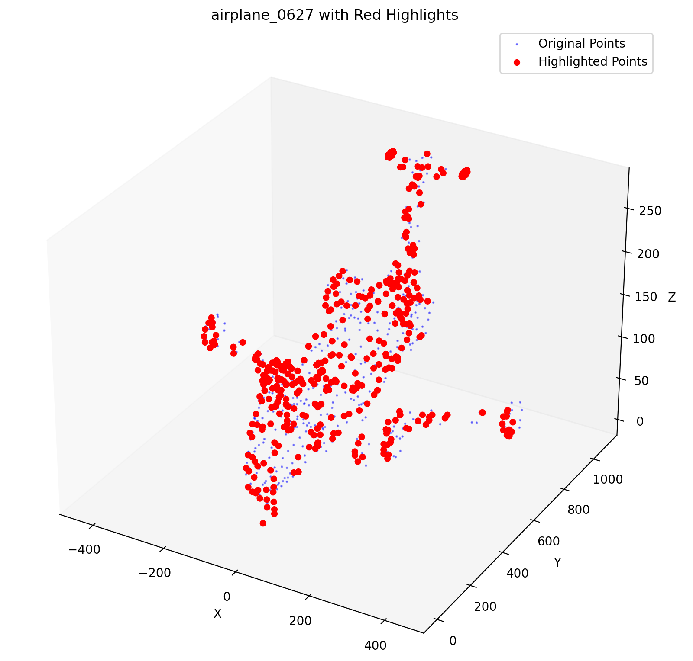

I am currently pursuing an MSc in Digital Systems Design at the School of Electronics and Computer Science (ECS), University of Southampton. My research focuses on AI accelerator architecture and RTL design, driven by cross-layer optimization from algorithms and systems.
Since Winter 2024, I have been collaborating remotely on AI chip research and tape-out with Dr. Changchun Zhou.
I received my BEng in Microelectronics Science and Engineering from Harbin Institute of Technology in June 2025.
My master project focuses on the design and implementation of neural networks on physical neural networks (PNN) or physics-inspired engines, under the supervision of Dr. Sajjad Taravati.
My research spans full-stack optimization from algorithm to hardware for AI chip, including:
- Algorithm-to-hardware design and implementation of AI chips
- Hardware-software co-design for intelligent computing accelerators
- Computer architecture and novel accelerator architectures
Further details can be found in my CV.
I am currently seeking PhD opportunities for Fall 2026 and Fall 2027.
Education
MSc Digital Systems Design
BEng Microelectronics Science and Engineering
Publications

A Unified Function Processor with Integer Arithmetic Based on Piecewise Chebyshev Polynomial Approximation
IEEE International Symposium on Circuits and Systems (ISCAS) (Accepted)
Abstract
Nonlinear functions are fundamental components in widely applied AI algorithms. However, their hardware implementation presents a major challenge due to the diversity of function types and the full precision requirement (e.g., FP32), which results in significant area and energy overheads. To overcome these issues, we present a Unified Function Processor (UFP) with integer arithmetic, capable of efficiently computing a wide range of nonlinear functions with high accuracy under integer constraints. First, we propose a dynamic programming segmentation algorithm within a third-degree Chebyshev polynomial framework that optimally partitions each function into eight integer-aligned segments to minimize global quantization error. Second, a unified three-stage pipelined hardware with computation element reuse is proposed. Implemented in TSMC 28-nm HPC technology and working at 1GHz, the proposed UFP achieves up to 93.6% reductions in area compared to the state-of-the-art works, with a 79% lower energy consumption. The architecture flexibly supports all mainstream functions in AI algorithms with configurable precision and range, offering a compact and scalable solution for AI acceleration hardware.

Variable Bit-Width Unified Function Processor for AI Acceleration
IEEE Transactions on Circuits and Systems I (TCAS-I) (in preparation)

Variable Bit-Width Unified Function Processor for AI Acceleration
IEEE Transactions on Circuits and Systems II (TCAS-II) (in preparation)
Projects
NPU Subsystem Microarchitecture Co-designer and Developer | Supervised by Dr. Changchun Zhou
- Co-designed the microarchitecture of a research-oriented LLM accelerator with stage-level functional partitioning and implementing modules at RTL level.
OCI Module Developer, UFP Module Co-developer | Supervised by Dr. Changchun Zhou
- Proposed the Quantization-Aware Polynomial Approximation Algorithm (QADP) based on Chebyshev. Built a configurable Python toolchain for design-space exploration and error-resource trade-off analysis.
- Designed the OCI (output reversely compresses input) module, including module-level instruction registers configuration, micro architecture design, dataflow, and RTL implementation, covering AXI transactions, address generation, data reorganization and scheduling. Completed module-level simulation and functional verification, and finally integrated it to SoC.
Team Leader | Supervised by Dr. Changchun Zhou
- Designed a point cloud sampling and neighbor-search algorithm based on voxel partitioning, which reduced explicit distance computations by leveraging voxel index mapping.
Team Member of Controller Part
- Developed a dynamic audio-responsive lighting control system based on feature extraction and adaptive control algorithms base on Modbus protocol, ADC acquisition, and RS485 communication on STM32 platform. Deployed in the 2025 Harbin Ice and Snow World.
Skills
- Programming: Verilog, SystemVerilog, C, Python
- Digital ASIC Implementation: Basic Full RTL-to-GDSII flow; Synopsys DC/DFT, Cadence Xcelium/Innovus/Virtuoso; AMS 0.35µm/TSMC 180nm PDK; SDC constraints; post-layout simulation
- FPGA & Simulation: Quartus, ModelSim, MATLAB
- PCB / Embedded: Altium Designer
- Language: English(IELTS 6.5), Chinese(Native)